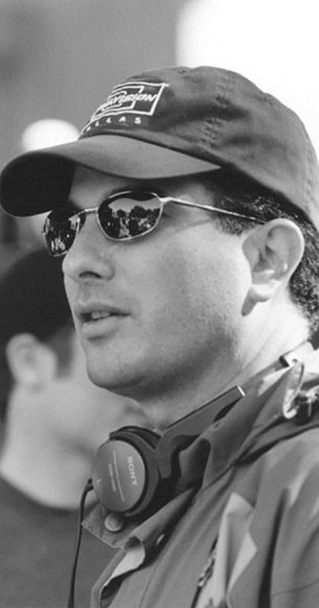

Jan Edward mais conhecido como Ed. Decter nasceu em 1959 em Beverly Hills, Califórnia,com 20 anos se formou na universidade de Weslayan, em 1979 começou sua carreira de escritor e produtor em 1988.
Sua primeira obra como roterista foi "The adventures of Mark e Brian" uma série de televisão lançada em 1991,logo em seguida "Incorrigible Cory" popularmente conhecida como Boy Meets world em 1993 a 1994.
Como diretor sua primeira obra dirigida foi "The New"(The New Guy) de 2002.E como produtor ele conta com 13 obras no total sendo a mais famosa entre elas ShadowHunters de 2016,que consequentimente foi sua ultima obra publicada,ele partiu pouco antes da produção da segunda temporada.
